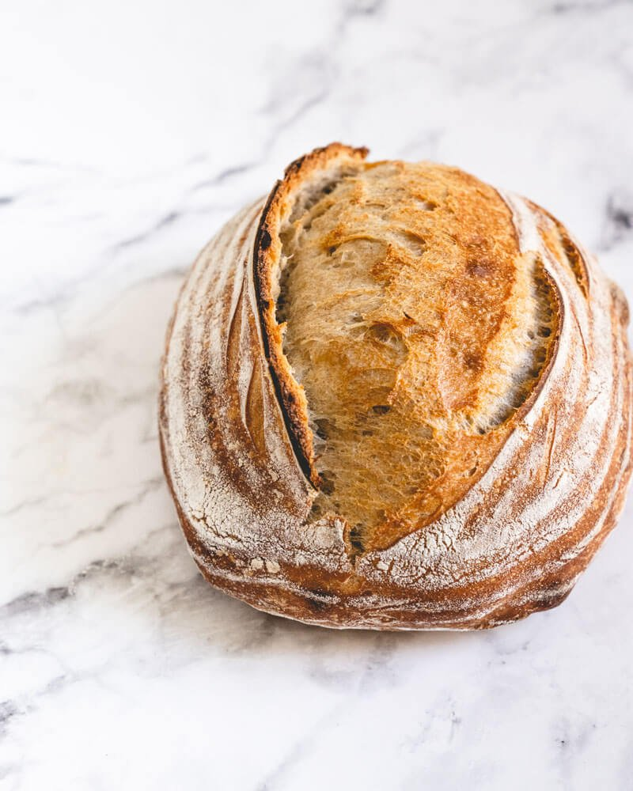

Sourdough Bread Recipe

Show me the dough!
I have been making sourdough for several years now.
It is daunting at first but once you get past the part
where you have to keep a community of microscopic organisms a
live and well, it's easy!
The best part is that all you really need is flour, water and salt.
Ingredients
- 1 kg flour
- 825g water
- 225g sourdough starter
- 25g Salt
Steps
- Add 700g water to bowl
- Add starter to water and mix
- Add flour to water and mix well to incorporate
- Once mixed thoroughly, let sit for 35 minutes to autolyze
- After autolyze, fold every 30-40 minutes until developed
- Turn out onto bench, pre-shape, let sit 30 minutes
- Final shape, bench rest and refrigerate overnight
- Bake at 450 degrees F for 45 minutes (remove lid after 30 minutes)